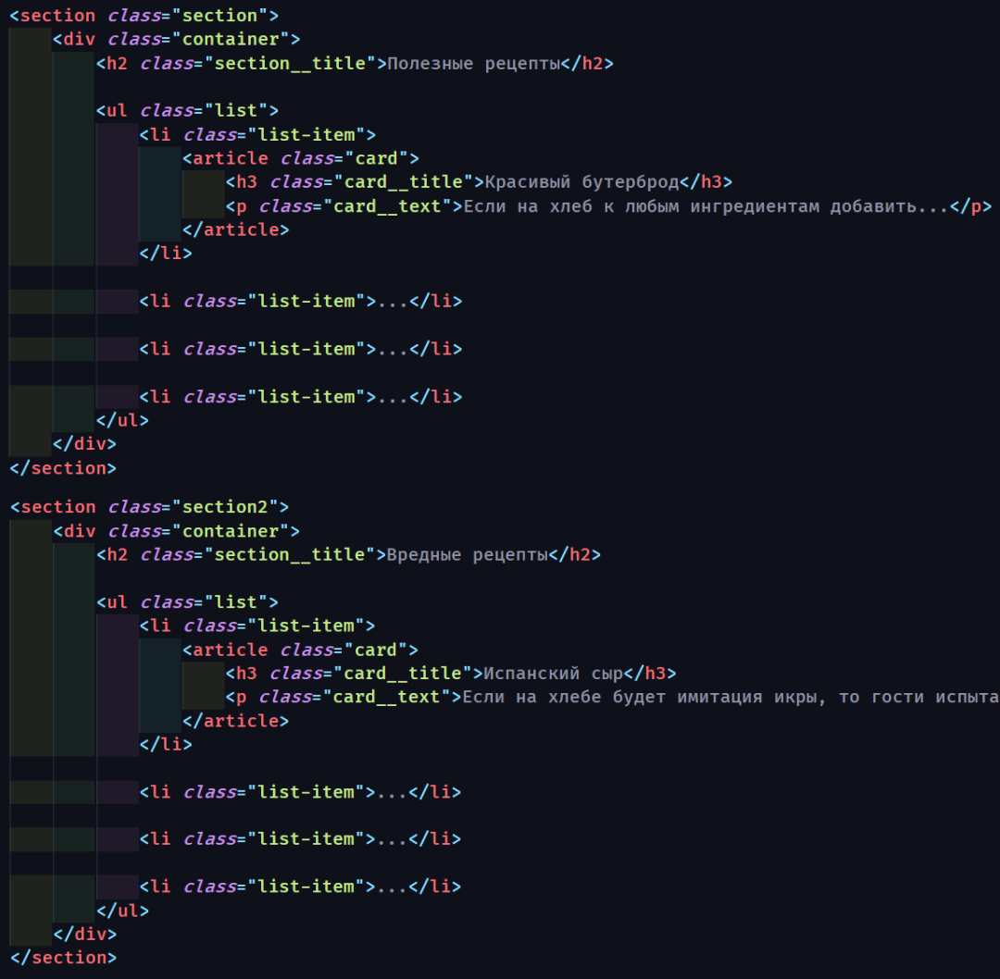
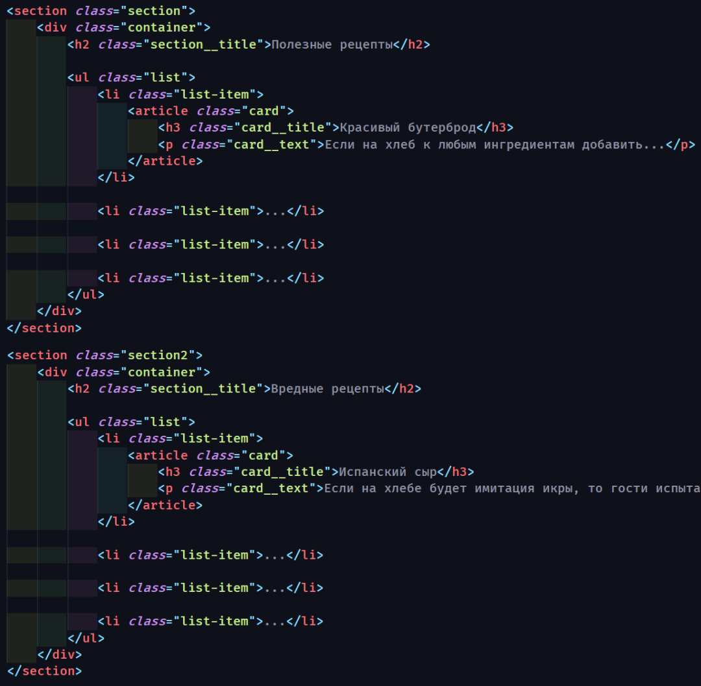

Отступы в вёрстке: margin и padding
Отступы в вёрстке: margin и padding
В этой статье я рассмотрю самые популярные "стандартные" решения для сохранения смысла и хорошей читаемости вашего кода. Если точнее — речь пойдет об основных правилах организации отступов. Они сильно влияют на общую функциональность кода и, если всё сделано верно, позволяют легко вносить изменения в любую его часть. При этом другие части кода продолжат нормально работать.
Как это часто бывает, знание базовых принципов поможет проявить гибкость и выйти за их пределы. Эти знания особенно важны для начинающих, но также будут полезным напоминанием и для более опытных верстальщиков. Итак, поговорим о фундаментальных основах работы с отступами в вёрстке.
Отступ задается от предыдущего элемента к следующему: от первого ко второму, сверху вниз, слева направо.

ВАЖНО: margin всегда задают от предыдущего элемента к следующему.
Свойство margin необходимо только для того, чтобы отодвинуть своего соседа справа или снизу, поэтому используется margin-right и margin-bottom
(!) Свойства margin-left и margin-top используются крайне редко.
Для padding верно обратное. Исключением является его применения в декоративных целях, например, для увеличения области ссылки.
Отступ внутри блока сверху или слева реализуется через padding-top и padding-left родителя.
Отступы, как правило, делают в направлении от предыдущего элемента к следующему. Так элемент не будет толкать сам себя.
Изначально элемент статичен, а его положение может меняться только под воздействием свойств других блоков или свойств родителя.

Отступ задается последнему возможному элементу в DOM-дереве
Вообще, margin задают исключительно между соседними элементами DOM-дерева. Для примера, посмотрите на этот список:
Отступ делают за счёт соседних элементов, а не дочерних:
Казалось бы, можно задать отступ параграфу <p>, либо обёртке <article> для достижения той же цели. Внешне останется все точно также, но так делать не рекомендуется.
Предыдущий пример был достаточно простым, но бывает вложенность значительно больше.
В случае с заголовком, если ему необходим отступ сверху, последним элементом будет section. Именно для него задается padding-top, а не div с классом container. Свойства margin, которые стоят по умолчанию необходимо обнулить.
Это необходимо для более простого поиска отступов в будущем — для вас или того, кто будет верстать после вас. Кроме того, возможны серьёзные проблемы при динамическом дублировании или выводе вёрстки с нестандартной структурой отступов.
Для последнего элемента группы отступ всегда обнуляется
Для наглядности возьмём наш предыдущий пример с рецептами
Между рецептами расстояние одинаковое. Можно заметить, что и до следующего блока расстояние такое же.

В соответствии со вторым принципом: последний margin обнуляется, а нижний отступ задаётся через padding для section. Я чаще всего задаю padding для секции с обоих сторон, если расстояние между секциями 100px задаю секциям padding-top:50px и padding-bottom:50px.
 

Для большего понимания рассмотрим другой пример, который часто встречается на практике:


Советую использовать псевдоклассы :last-child чаще других, например так:

Подытожим:
- — отступы задаём от предыдущего элемента к следующему
- — используем только margin-right и margin-bottom
- — внешние отступы задаются только между соседями
- — внутренний отступ задаём самому верхнему элементу в дом дереве
- — последнему элементу группы отступ всегда обнуляем
Конечно бывают исключения. Ведь макеты бывают различной сложности. Иногда базовые принципы приходится нарушать в угоду дизайнерского решения или простоты вёрстки. Но для этого эти принципы необходимо хорошо знать.